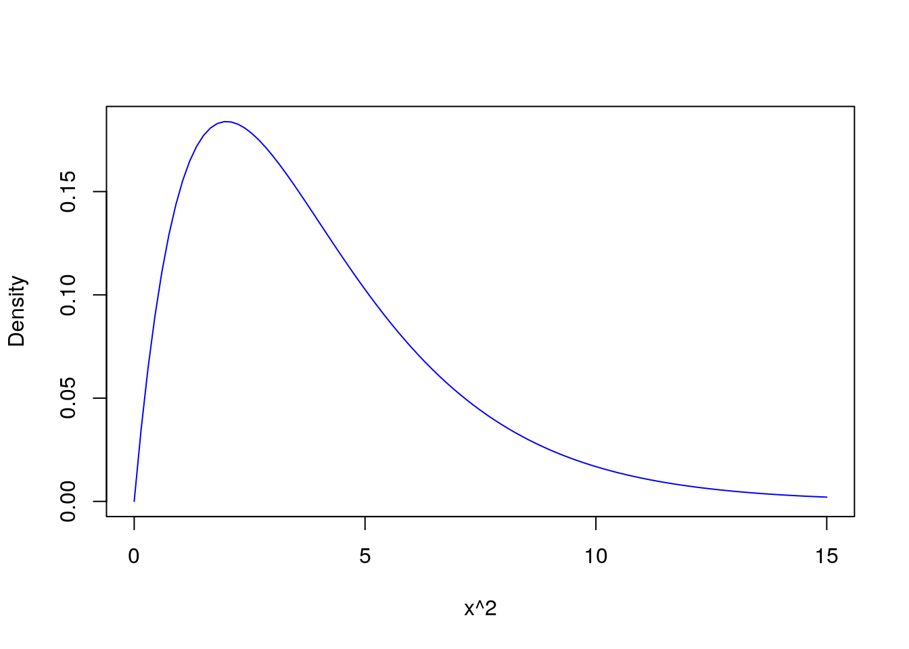
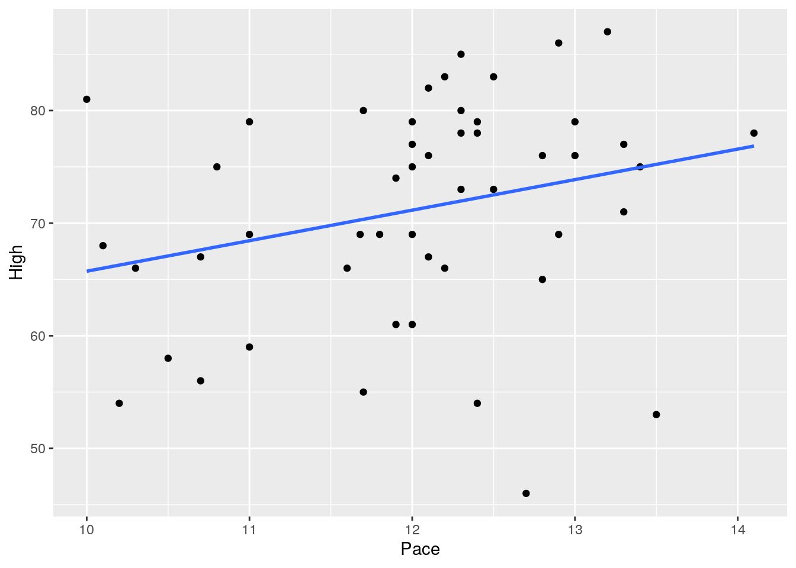
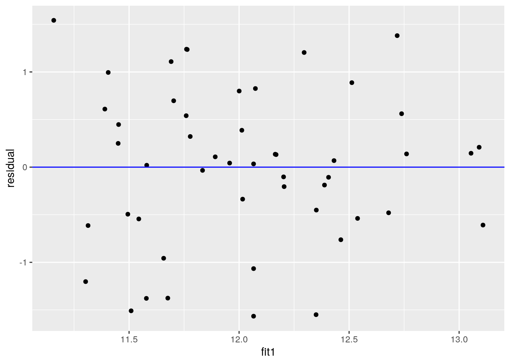
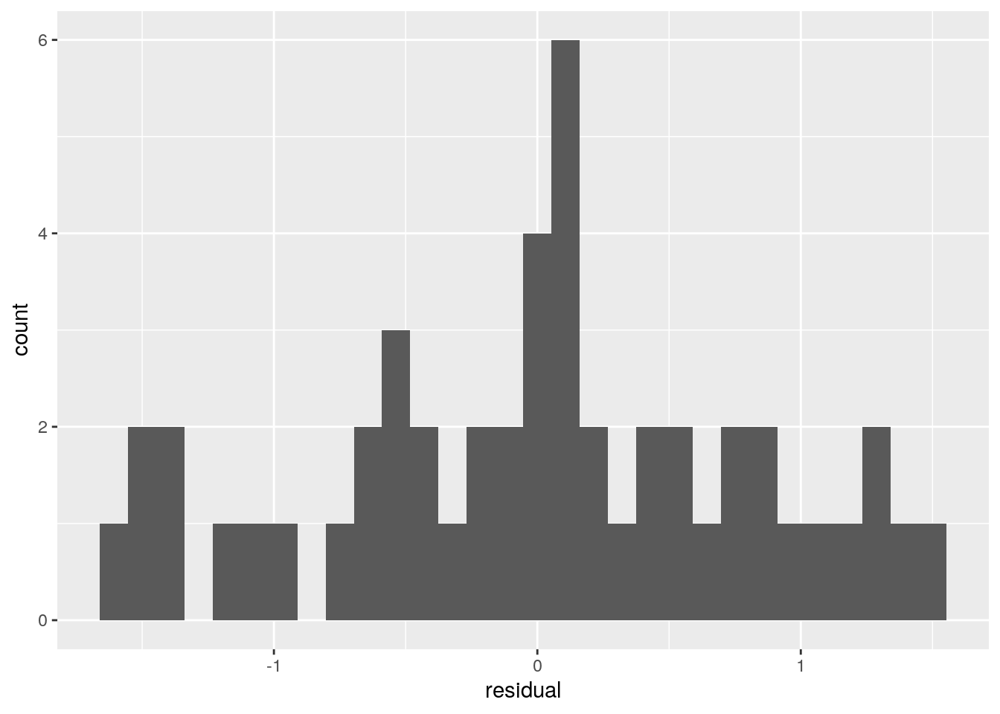
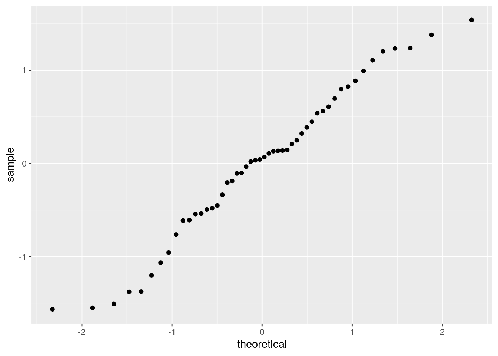
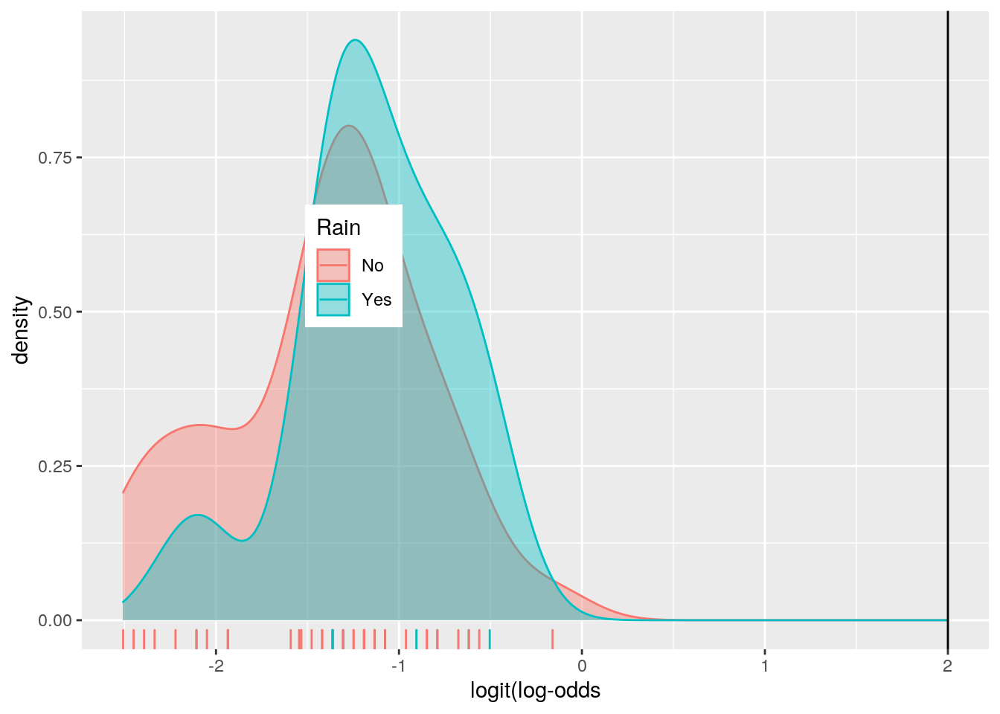
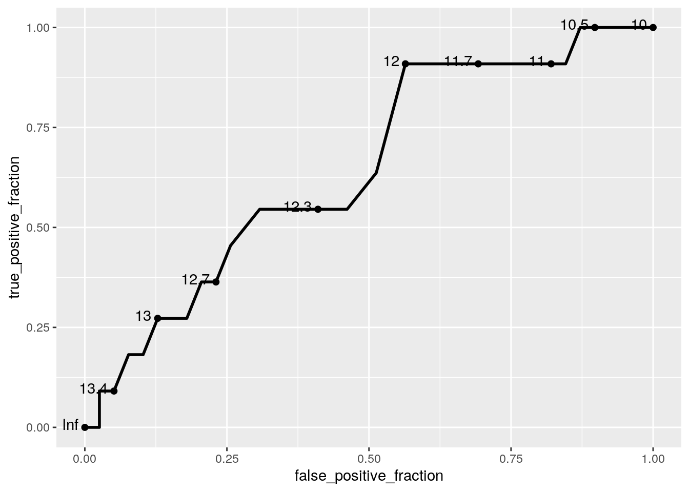

My data is my merged data set from Project 1, which looks at my biking analytics from Texas 4000. There are 50 observations measuring 8 variables, which are date, time, pace, miles, rider, weather, rain (whether rain was present or not), low temperature, and high temperature.
library(tidyverse)## ── Attaching packages ─────────────────────────────────────── tidyverse 1.3.0 ──## ✓ ggplot2 3.3.3 ✓ purrr 0.3.4
## ✓ tibble 3.0.4 ✓ dplyr 1.0.5
## ✓ tidyr 1.1.3 ✓ stringr 1.4.0
## ✓ readr 1.4.0 ✓ forcats 0.5.0## ── Conflicts ────────────────────────────────────────── tidyverse_conflicts() ──
## x dplyr::filter() masks stats::filter()
## x dplyr::lag() masks stats::lag()library(fivethirtyeight)
read.csv("Project2.csv")## Date Time Pace Miles Rider Weather Rain Low High
## 1 11/21/20 1.50 10.00 16.40 Addison Partly Cloudy No 65 81
## 2 11/23/20 1.48 10.10 16.40 Addison Partly Cloudy No 52 68
## 3 11/26/20 1.98 12.30 24.57 Addison Sunny No 45 78
## 4 12/2/20 2.18 11.60 23.50 Addison Sunny No 44 66
## 5 12/3/20 2.17 11.00 23.42 Addison Sunny No 40 59
## 6 12/5/20 2.50 10.20 26.24 Aashna Partly Cloudy No 36 54
## 7 12/8/20 3.62 11.00 32.80 Aashna Cloudy No 43 79
## 8 12/16/20 3.38 10.50 35.49 Aashna Windy No 36 58
## 9 12/17/20 3.10 10.30 25.70 Addison Windy No 30 66
## 10 12/20/20 2.42 11.80 28.73 Aashna Sunny No 42 69
## 11 12/22/20 2.92 12.00 30.60 Addison Rainy Yes 43 75
## 12 12/23/20 2.98 12.10 36.25 Aashna Partly Cloudy No 47 82
## 13 1/1/21 2.90 13.50 40.42 Alex Rainy Yes 37 53
## 14 1/8/21 1.83 12.40 22.82 Aashna Cloudy No 37 54
## 15 1/13/21 2.32 10.70 25.02 Alex Rainy Yes 32 67
## 16 1/14/21 2.83 11.68 33.09 Aashna Cloudy No 38 69
## 17 1/18/21 3.80 10.80 40.87 Addison Sunny No 37 75
## 18 1/19/21 1.98 11.00 21.80 Alex Sunny No 50 69
## 19 1/20/21 2.00 11.70 23.48 Addison Sunny No 48 55
## 20 1/22/21 2.12 12.40 23.01 Addison Rainy Yes 52 78
## 21 1/23/21 3.47 11.90 41.32 Addison Partly Cloudy No 50 61
## 22 1/25/21 1.82 12.80 23.34 Aashna Partly Cloudy No 49 76
## 23 1/27/21 2.60 12.80 33.28 Aashna Rainy Yes 45 65
## 24 1/28/21 1.92 10.70 20.48 Alex Partly Cloudy No 38 56
## 25 1/29/21 3.11 12.00 37.60 Alex Partly Cloudy No 36 69
## 26 1/30/21 3.75 11.70 43.86 Addison Partly Cloudy No 53 80
## 27 2/1/21 2.30 12.10 27.83 Addison Rainy Yes 41 67
## 28 2/3/21 2.37 12.00 28.43 Aashna Rainy Yes 45 77
## 29 2/4/21 2.82 12.30 34.69 Addison Partly Cloudy No 55 85
## 30 2/5/21 1.83 12.00 20.67 Aashna Partly Cloudy No 44 61
## 31 2/6/21 3.37 13.40 45.12 Alex Partly Cloudy No 48 75
## 32 2/8/21 2.73 12.10 33.29 Aashna Cloudy No 51 76
## 33 2/10/21 1.57 12.70 20.10 Addison Partly Cloudy No 37 46
## 34 2/22/21 1.93 13.00 25.28 Addison Rainy Yes 42 76
## 35 2/23/21 2.28 13.00 24.30 Alex Partly Cloudy No 47 79
## 36 2/24/21 2.43 12.90 31.69 Addison Partly Cloudy No 64 86
## 37 2/25/21 3.45 12.20 42.04 Alex Partly Cloudy No 51 66
## 38 2/27/21 3.82 12.00 45.97 Addison Rainy Yes 58 79
## 39 3/3/21 3.45 12.50 43.01 Addison Rainy Yes 38 73
## 40 3/5/21 2.88 12.30 35.52 Aashna Partly Cloudy No 57 80
## 41 3/6/21 3.93 12.90 50.91 Addison Partly Cloudy No 49 69
## 42 3/8/21 1.78 11.90 17.80 Addison Cloudy No 45 74
## 43 3/10/21 4.10 12.20 50.37 Addison Partly Cloudy No 64 83
## 44 3/13/21 4.57 13.30 60.79 Addison Rainy Yes 68 77
## 45 3/14/21 3.60 14.10 50.86 Addison Cloudy No 53 78
## 46 3/15/21 4.77 13.20 62.94 Addison Partly Cloudy No 47 87
## 47 3/16/21 5.15 12.50 63.17 Alex Windy No 67 83
## 48 3/18/21 3.43 12.30 42.38 Alex Sunny No 47 73
## 49 3/19/21 3.78 13.30 50.58 Alex Sunny No 46 71
## 50 3/23/21 2.53 12.40 31.31 Alex Partly Cloudy No 56 79Project2 <- read.csv("Project2.csv")
print(Project2)## Date Time Pace Miles Rider Weather Rain Low High
## 1 11/21/20 1.50 10.00 16.40 Addison Partly Cloudy No 65 81
## 2 11/23/20 1.48 10.10 16.40 Addison Partly Cloudy No 52 68
## 3 11/26/20 1.98 12.30 24.57 Addison Sunny No 45 78
## 4 12/2/20 2.18 11.60 23.50 Addison Sunny No 44 66
## 5 12/3/20 2.17 11.00 23.42 Addison Sunny No 40 59
## 6 12/5/20 2.50 10.20 26.24 Aashna Partly Cloudy No 36 54
## 7 12/8/20 3.62 11.00 32.80 Aashna Cloudy No 43 79
## 8 12/16/20 3.38 10.50 35.49 Aashna Windy No 36 58
## 9 12/17/20 3.10 10.30 25.70 Addison Windy No 30 66
## 10 12/20/20 2.42 11.80 28.73 Aashna Sunny No 42 69
## 11 12/22/20 2.92 12.00 30.60 Addison Rainy Yes 43 75
## 12 12/23/20 2.98 12.10 36.25 Aashna Partly Cloudy No 47 82
## 13 1/1/21 2.90 13.50 40.42 Alex Rainy Yes 37 53
## 14 1/8/21 1.83 12.40 22.82 Aashna Cloudy No 37 54
## 15 1/13/21 2.32 10.70 25.02 Alex Rainy Yes 32 67
## 16 1/14/21 2.83 11.68 33.09 Aashna Cloudy No 38 69
## 17 1/18/21 3.80 10.80 40.87 Addison Sunny No 37 75
## 18 1/19/21 1.98 11.00 21.80 Alex Sunny No 50 69
## 19 1/20/21 2.00 11.70 23.48 Addison Sunny No 48 55
## 20 1/22/21 2.12 12.40 23.01 Addison Rainy Yes 52 78
## 21 1/23/21 3.47 11.90 41.32 Addison Partly Cloudy No 50 61
## 22 1/25/21 1.82 12.80 23.34 Aashna Partly Cloudy No 49 76
## 23 1/27/21 2.60 12.80 33.28 Aashna Rainy Yes 45 65
## 24 1/28/21 1.92 10.70 20.48 Alex Partly Cloudy No 38 56
## 25 1/29/21 3.11 12.00 37.60 Alex Partly Cloudy No 36 69
## 26 1/30/21 3.75 11.70 43.86 Addison Partly Cloudy No 53 80
## 27 2/1/21 2.30 12.10 27.83 Addison Rainy Yes 41 67
## 28 2/3/21 2.37 12.00 28.43 Aashna Rainy Yes 45 77
## 29 2/4/21 2.82 12.30 34.69 Addison Partly Cloudy No 55 85
## 30 2/5/21 1.83 12.00 20.67 Aashna Partly Cloudy No 44 61
## 31 2/6/21 3.37 13.40 45.12 Alex Partly Cloudy No 48 75
## 32 2/8/21 2.73 12.10 33.29 Aashna Cloudy No 51 76
## 33 2/10/21 1.57 12.70 20.10 Addison Partly Cloudy No 37 46
## 34 2/22/21 1.93 13.00 25.28 Addison Rainy Yes 42 76
## 35 2/23/21 2.28 13.00 24.30 Alex Partly Cloudy No 47 79
## 36 2/24/21 2.43 12.90 31.69 Addison Partly Cloudy No 64 86
## 37 2/25/21 3.45 12.20 42.04 Alex Partly Cloudy No 51 66
## 38 2/27/21 3.82 12.00 45.97 Addison Rainy Yes 58 79
## 39 3/3/21 3.45 12.50 43.01 Addison Rainy Yes 38 73
## 40 3/5/21 2.88 12.30 35.52 Aashna Partly Cloudy No 57 80
## 41 3/6/21 3.93 12.90 50.91 Addison Partly Cloudy No 49 69
## 42 3/8/21 1.78 11.90 17.80 Addison Cloudy No 45 74
## 43 3/10/21 4.10 12.20 50.37 Addison Partly Cloudy No 64 83
## 44 3/13/21 4.57 13.30 60.79 Addison Rainy Yes 68 77
## 45 3/14/21 3.60 14.10 50.86 Addison Cloudy No 53 78
## 46 3/15/21 4.77 13.20 62.94 Addison Partly Cloudy No 47 87
## 47 3/16/21 5.15 12.50 63.17 Alex Windy No 67 83
## 48 3/18/21 3.43 12.30 42.38 Alex Sunny No 47 73
## 49 3/19/21 3.78 13.30 50.58 Alex Sunny No 46 71
## 50 3/23/21 2.53 12.40 31.31 Alex Partly Cloudy No 56 79T4K <- data.frame(Project2)
man <- manova(cbind(Pace,Miles)~Weather, data=T4K)
summary(man)## Df Pillai approx F num Df den Df Pr(>F)
## Weather 4 0.23172 1.4743 8 90 0.1777
## Residuals 45A MANOVA test was ran with the numeric variables being pace and miles and the categorical variable being weather. The p-value was 0.177, which is not significant. Univariate ANOVA tests were not run because there were not significant differences observed. The MANOVA assumptions were not met as the first assumption pertaining to random samples is violated.
table(Project2$Weather)##
## Cloudy Partly Cloudy Rainy Sunny Windy
## 6 21 11 9 3X2<-vector()
for(i in 1:10000){
samp<-sample(factor(c("Partly Cloudy","Sunny","Cloudy", "Windy", "Rainy")),50,replace=T)
obs<-table(samp)
exp<-c(21,9,6,3,11)
X2[i]<-sum((obs-exp)^2/exp)
}
quantile(X2,.95)## 95%
## 59.00404qchisq(.95, df=4)## [1] 9.487729curve(dchisq(x, df = 4), from = 0, to = 15, col = 'blue', xlab = "x^2", ylab = "Density") #plot null and test 
Ho: The observed proportions match theoretical proportions for weather. Ha: The observed proportions do not match theoretical proportions for weather. The value for the simulated chi-squared cuts of 5% above is 59.818, and this does not match what’s in the chi-squared table. This means that the null hypothesis is rejected as the observed proportions don’t match the theoretical ones.
options(repos=structure(c(CRAN="YOUR FAVORITE MIRROR")))
pace <- Project2$Pace - mean(Project2$Pace)
high <- Project2$High - mean(Project2$High)
fit <- lm(Pace ~ Miles*High, data = Project2)
summary(fit)##
## Call:
## lm(formula = Pace ~ Miles * High, data = Project2)
##
## Residuals:
## Min 1Q Median 3Q Max
## -1.56588 -0.52752 0.05574 0.55611 1.54232
##
## Coefficients:
## Estimate Std. Error t value Pr(>|t|)
## (Intercept) 8.8650882 2.6597161 3.333 0.0017 **
## Miles 0.0826680 0.0848938 0.974 0.3353
## High 0.0256208 0.0362005 0.708 0.4827
## Miles:High -0.0005922 0.0011151 -0.531 0.5979
## ---
## Signif. codes: 0 '***' 0.001 '**' 0.01 '*' 0.05 '.' 0.1 ' ' 1
##
## Residual standard error: 0.8403 on 46 degrees of freedom
## Multiple R-squared: 0.2708, Adjusted R-squared: 0.2232
## F-statistic: 5.694 on 3 and 46 DF, p-value: 0.002112coef(fit)## (Intercept) Miles High Miles:High
## 8.8650881672 0.0826679850 0.0256207974 -0.0005922494library(ggplot2)
library(dplyr)
Project2%>%ggplot(aes(Pace, High)) + geom_point() + geom_smooth(method = 'lm', se = F)## `geom_smooth()` using formula 'y ~ x'
cor(Project2$Pace, Project2$High)## [1] 0.2652569residual <- fit$residuals
fit1 <- fit$fitted.values
ggplot() + geom_point(aes(fit1,residual)) + geom_hline(yintercept = 0, color = 'blue')
ggplot() + geom_histogram(aes(residual))## `stat_bin()` using `bins = 30`. Pick better value with `binwidth`.
ggplot() + geom_qq(aes(sample=residual)) + geom_qq()
library(lmtest)## Loading required package: zoo##
## Attaching package: 'zoo'## The following objects are masked from 'package:base':
##
## as.Date, as.Date.numericlibrary(zoo)
install.packages("zoo")## Installing package into '/stor/home/acx64/R/x86_64-pc-linux-gnu-library/3.6'
## (as 'lib' is unspecified)## Warning: unable to access index for repository YOUR FAVORITE MIRROR/src/contrib:
## cannot open URL 'YOUR FAVORITE MIRROR/src/contrib/PACKAGES'## Warning: package 'zoo' is not available (for R version 3.6.1)coeftest(fit)[,1:2]## Estimate Std. Error
## (Intercept) 8.8650881672 2.659716142
## Miles 0.0826679850 0.084893768
## High 0.0256207974 0.036200460
## Miles:High -0.0005922494 0.001115144#coeftest(fit, vcov=vcovHC(fit))[,1:2]
fit2 <- lm(High~Pace, data = Project2)
SST <- sum((Project2$High-mean(Project2$High))^2)
SSR <- sum((fit2$fitted.values-mean(Project2$High)))
SSE <- sum(fit2$residuals^2)
(SSR/SST)*100## [1] 7.940526e-15The coefficient was positive but weak indicating that there’s a weak relationship between pace and the high temperature. Plots were made to show the interaction between the two variables, and numeric variables were mean centered as necessary. The model explains 7.94 e-17% of the variation outcome. For the assumptions, homoskedasticity was slightly violated, and normality and linearity were violated. Robust standard errors were computed, and their values were slightly higher than the non-robust standard errors.
samp_distn <- replicate(5000, {
boot_dat <- Project2[sample(nrow(Project2),replace=TRUE),]
fit3 <- lm(High ~ Miles*Pace, data=boot_dat)
coef(fit3)
})
samp_distn%>%t%>%as.data.frame%>%summarize_all(sd)## (Intercept) Miles Pace Miles:Pace
## 1 59.18432 1.648045 4.906283 0.1320911The bootstrap standard error is the highest then robust then non-robust. The p-value is also bigger for bootstrap compared to the robust and non-robust values.
library(tidyverse)
library(lmtest)
library(plotROC)
data <- Project2%>%mutate(y=ifelse(Rain=="Yes",1,0))
head(data)## Date Time Pace Miles Rider Weather Rain Low High y
## 1 11/21/20 1.50 10.0 16.40 Addison Partly Cloudy No 65 81 0
## 2 11/23/20 1.48 10.1 16.40 Addison Partly Cloudy No 52 68 0
## 3 11/26/20 1.98 12.3 24.57 Addison Sunny No 45 78 0
## 4 12/2/20 2.18 11.6 23.50 Addison Sunny No 44 66 0
## 5 12/3/20 2.17 11.0 23.42 Addison Sunny No 40 59 0
## 6 12/5/20 2.50 10.2 26.24 Aashna Partly Cloudy No 36 54 0fit4 <- glm(y~Pace, data=data, family=binomial(link="logit"))
coeftest(fit4)##
## z test of coefficients:
##
## Estimate Std. Error z value Pr(>|z|)
## (Intercept) -8.23215 5.05746 -1.6277 0.1036
## Pace 0.57247 0.41031 1.3952 0.1630exp(coef(fit4))## (Intercept) Pace
## 0.0002659639 1.7726362647logistic <- function(x){exp(x)/(1+exp(s))}
table(truth=data$Rain, prediction=data$Pace>12.1)%>%addmargins## prediction
## truth FALSE TRUE Sum
## No 21 18 39
## Yes 5 6 11
## Sum 26 24 50(18+6)/50## [1] 0.4818/39## [1] 0.46153856/11## [1] 0.545454518/24## [1] 0.75widths<-diff(data$y)
heights<-vector()
for(i in 1:100) heights[i]<-data$y[i]+data$y[i+1]
AUC<-sum(heights*widths/2)## Warning in heights * widths: longer object length is not a multiple of shorter
## object lengthAUC%>%round(3)## [1] NAProject2$logit <- predict(fit4, type = "link")
Project2%>%ggplot()+geom_density(aes(logit,color=Rain, fill=Rain),alpha=0.4)+theme(legend.position = c(0.3,0.6))+geom_vline(xintercept = 2)+xlab("logit(log-odds")+geom_rug(aes(logit,color=Rain))
library(plotROC)
ROCplot <- ggplot(data)+geom_roc(aes(d=y,m=Pace, n.cuts=0))## Warning: Ignoring unknown aesthetics: n.cutsROCplot
calc_auc(ROCplot)## PANEL group AUC
## 1 1 -1 0.6468531The estimate for the coefficient intercept is -8.232, and when pace increases, the odds are multiplied by a factor of 4.714e-4. The confusion matrix was used to calculate the accuracy (0.48), sensitivity (0.46), specificity (0.54), and precision (0.75). The AUC value is NA meaning there’s no area under the curve. The density plot was used to observe accuracy, sensitivity, specificity, and precision. Additionally, an ROC plot was made, and the AUC value calculated was 0.646.
library(tidyverse)
library(lmtest)
library(pROC)
library(glmnet)
class_diag<-function(probs,truth){
tab<-table(factor(probs>.5,levels=c("FALSE","TRUE")),truth)
acc=sum(diag(tab))/sum(tab)
sens=tab[2,2]/colSums(tab)[2]
spec=tab[1,1]/colSums(tab)[1]
ppv=tab[2,2]/rowSums(tab)[2]
if(is.numeric(truth)==FALSE & is.logical(truth)==FALSE) truth<-as.numeric(truth)-1
ord<-order(probs, decreasing=TRUE)
probs <- probs[ord]; truth <- truth[ord]
TPR=cumsum(truth)/max(1,sum(truth))
FPR=cumsum(!truth)/max(1,sum(!truth))
dup<-c(probs[-1]>=probs[-length(probs)], FALSE)
TPR<-c(0,TPR[!dup],1); FPR<-c(0,FPR[!dup],1)
n <- length(TPR)
auc<- sum( ((TPR[-1]+TPR[-n])/2) * (FPR[-1]-FPR[-n]) )
data.frame(acc,sens,spec,ppv,auc)
}
k=10
data1 <- data[sample(nrow(data)),]
folds <- cut(seq(1:nrow(data)),breaks=k,labels=F)
diags <- NULL
#this is where my code stops running
for(i in 1:k){
train <- data1[folds!=i,]
test <- data1[folds==i,]
truth <- test$y
fit5 <- glm(y~Pace, data = data,family="binomial")
probs <- predict(fit5, newdata = test,type="response")
diags <- rbind(diags,class_diag(probs,truth) } #this specific line keeps giving me errors on each part that involves a 10-fold CV
summarize_all(diags,mean)
k=10
data <- Project2 %>% sample_frac
data$binary<-ifelse(data$Rain=="Yes",1,0)
folds <- ntile(1:nrow(data),n=10)
diags<-NULL
#same thing here because same code
for(i in 1:k){
train <- data[folds!=i,]
test <- data[folds==i,]
truth <- test$binary
fit <- glm(binary~Time+Pace+Miles+Rider+Weather+Rain+Low+High,
data=train, family="binomial")
probs <- predict(fit, newdata=test, type="response")
diags<-rbind(diags,class_diag(probs,truth)) #this specific line keeps giving me errors on each part that involves a 10-fold CV
}
diags%>%summarize_all(mean)
data$binary<-ifelse(data$Rain=="Yes",1,0)
y<-as.matrix(data$binary)
x<-model.matrix(binary~Time+Pace+Miles+Rider+Weather+Rain+Low+High,data=data)[,-1]
head(x)
x<-scale(x)
head(x)
cv<-cv.glmnet(x,y,family="binomial")
lasso<-glmnet(x,y,family="binomial",lambda=cv$lambda.1se)
coef(lasso)
k=10
data <- Project2 %>% sample_frac
folds <- ntile(1:nrow(data),n=10)
data$binary<-ifelse(data$Rain=="Yes",1,0)
diags<-NULL
#same thing here because same code
for(i in 1:k){
train <- data[folds!=i,]
test <- data[folds==i,]
truth <- test$binary
fit <- glm(binary~Time+High,
data=train, family="binomial")
probs <- predict(fit, newdata=test, type="response")
diags<-rbind(diags,class_diag(probs,truth)) #this specific line keeps giving me errors on each part that involves a 10-fold CV
}
diags%>%summarize_all(mean) #this line will sometimes give output## Error: <text>:41:48: unexpected '}'
## 40: probs <- predict(fit5, newdata = test,type="response")
## 41: diags <- rbind(diags,class_diag(probs,truth) }
## ^For the fit model, the accuracy is _ , the sensitivity is , the specificity is , the precision is , and the AUC value is . For the 10-fold, the accuracy is 1 , the sensitivity is 1, the specificity is 1, the precision is 1, and the AUC value is 1. When LASSO was performed, the variables retained were time and high temperature. The accuracy is 0.667 , the sensitivity is 0, the specificity is 1, the precision is NaN, and the AUC value is 0.305.